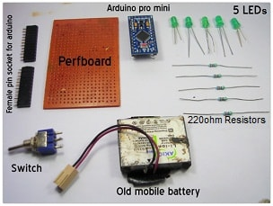
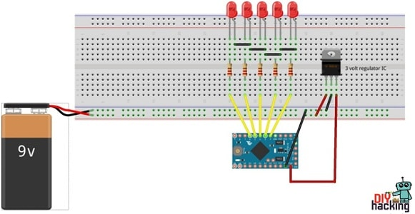

2015-11-03 - Nº 27

Editorial
Aqui está a Newsletter Nº 27 no seu formato habitual. Foram adicionados botões de partilha nas várias redes sociais, se gostar da Newsletter partilhe-a!
Todas as Newsletters encontram-se indexadas no link.
Esta Newsletter tem os seguintes tópicos:
A Yamaha apresentou uma mota que é "pilotada" por um robot humanoide. Saiu a revista MagPI Nº39 dedicada ao Raspberry PI e projetos relacionados. Saiu a HispaBrick Nº23 dedicada à Lego. A fundação Raspberry PI fez uma parceria com a element 14 para produção de placas Raspberry PI costumizadas para os clientes. Na Newsletter desta semana iremos apresentar um projeto de maker que é um Arduino POV Display. Iremos construir um circuito que é um alarme com LED de Infravermelhos.
 João Alves ([email protected])
João Alves ([email protected])
O conteúdo da Newsletter encontra-se sob a licença  Creative Commons Attribution-NonCommercial-ShareAlike 4.0 International License.
Creative Commons Attribution-NonCommercial-ShareAlike 4.0 International License.
Novidades da Semana ^
MOTOBOT Ver.1 (Technology exhibit)
"This is an autonomous motorcycle-riding humanoid robot built around a fusion of Yamaha's motorcycle and robotics technology. R&D is currently underway with the goal of developing the robot to ride an unmodified motorcycle on a racetrack at more than 200 km/h. The task of controlling the complex motions of a motorcycle at high speeds requires a variety of control systems that must function with a high degree of accuracy. We want to apply the fundamental technology and know-how gained in the process of this challenge to the creation of advanced rider safety and rider-support systems and put them to use in our current businesses, as well as using them to pioneer new lines of business."
THE MAGPI ISSUE 39 - NOVEMBER 2015
"Featured in The MagPi Issue 39: 30-Minute Projects; Introducing GPIO Zero; Time-lapse photography; Pixel art with the Sense HAT; Touchscreen Display special; And much, much more!"
HispaBrick issue 23 now available
"The latest edition of the digital LEGO fan magazine HispaBrick is now available for download in both English and Spanish. In this packed issue, Hispabricks does a retrospective of 7 years of Panzerbricks, talks to LEGO designer Mel Caddick, catches up with the SBrick kickstarter project, reviews a whole slew of new sets, and offers tutorials on building asteroids, trial trucks and WeDo line followers."
Raspberry Pi Customization Service
"This will be useful to anyone who wants to integrate Raspberry Pi into another product, and who would like to remove unneeded features to save on cost or add specific extra features. We hope it will help creative people to get their ideas off the ground with custom boards that can be built on a scale of thousands, rather than hundreds of thousands."
Ciência e Tecnologia ^
IBM Research Breakthrough Paves Way for Post-Silicon Future with Carbon Nanotube Electronics

"IBM Research today announced a major engineering breakthrough that could accelerate carbon nanotubes replacing silicon transistors to power future computing technologies. IBM scientists demonstrated a new way to shrink transistor contacts without reducing performance of carbon nanotube devices, opening a pathway to dramatically faster, smaller and more powerful computer chips beyond the capabilities of traditional semiconductors. The results will be reported in the October 2 issue of Science (DOI: 10.1126/science.aac8006). IBM's breakthrough overcomes a major hurdle that silicon and any semiconductor transistor technologies face when scaling down. In any transistor, two things scale: the channel and its two contacts. As devices become smaller, increased contact resistance for carbon nanotubes has hindered performance gains until now. These results could overcome contact resistance challenges all the way to the 1.8 nanometer node – four technology generations away."
Live Texturing of Augmented Reality Characters from Colored Drawings

"Coloring books capture the imagination of children and provide them with one of their earliest opportunities for creative expression. However, given the proliferation and popularity of digital devices, real-world activities like coloring can seem unexciting, and children become less engaged in them. Augmented reality holds unique potential to impact this situation by providing a bridge between real-world activities and digital enhancements. In this paper, we present an augmented reality coloring book App in which children color characters in a printed coloring book and inspect their work using a mobile device. The drawing is detected and tracked, and the video stream is augmented with an animated 3-D version of the character that is textured according to the child’s coloring. This is possible thanks to several novel technical contributions. We present a texturing process that applies the captured texture from a 2-D colored drawing to both the visible and occluded regions of a 3-D character in real time. We develop a deformable surface tracking method designed for colored drawings that uses a new outlier rejection algorithm for real-time tracking and surface deformation recovery. We present a content creation pipeline to efficiently create the 2-D and 3-D content. And, finally, we validate our work with two user studies that examine the quality of our texturing algorithm and the overall App experience."
A Different Type of 2D Semiconductor
"To the growing list of two-dimensional semiconductors, such as graphene, boron nitride, and molybdenum disulfide, whose unique electronic properties make them potential successors to silicon in future devices, you can now add hybrid organic-inorganic perovskites. However, unlike the other contenders, which are covalent semiconductors, these 2D hybrid perovskites are ionic materials, which gives them special properties of their own. Researchers at the U.S. Department of Energy (DOE)’s Lawrence Berkeley National Laboratory (Berkeley Lab) have successfully grown atomically thin 2D sheets of organic-inorganic hybrid perovskites from solution. The ultrathin sheets are of high quality, large in area, and square-shaped. They also exhibited efficient photoluminescence, color-tunability, and a unique structural relaxation not found in covalent semiconductor sheets."
Modelos 3D ^
Com a disponibilidade de ferramentas que permitem dar azo a nossa imaginação na criação de peças 3D e espaços como o thingiverse para as publicar, esta rubrica apresenta alguns modelos selecionados que poderão ser úteis.
Generic Parametric Cooling Fan Nozzle (http://www.thingiverse.com/thing:1055536)
This is a nozzle/duct for cooling a 3D print. It's not the most effective, but it will work for any printer where the print bed moves up and down for Z. Designed to fit a 40mm fan.
v2:
Optimized for Customizer, since the design can be easily adapted for other fan sizes by changing some variables. Increased nozzle wall thickness - 0.6mm was too thin for my liking
v1:
Basic design. The curve is sinusoidal for smooth turns in airflow. I'd like to make the output end wider, but it's a catch-22 because I'd need a cooling fan to be able to print that overhang angle. Mounts on a board or other vertical shaft, to be lined up with the height of the extruder tip. SCAD file included so ya'll can tweak and modify it easily.
PCB clamp (http://www.thingiverse.com/thing:1082656)

My take on this simple PCB vice.
I had a piece of 10 mm aluminium pipe laying around so I used it for guiding rods.
The end pieces should be of tight fit but I had to use few drops of superglue.
Jaws are pulled together with rubber band, secured in place with a piece of filament.
Universal Project Box for Type C PCB (http://www.thingiverse.com/thing:941944)
Universal project box for Type C PCB (72mm x 47mm) The height is adjustable.
Circuitos ^
Aqui é apresentado um circuito simples que poderá ser construído com componentes.
Alarme com LED de Infravermelhos
Hoje iremos construir um circuito que deteta a interrupção de um feixe de infravermelhos permitindo montar um alarme.
Foi usado o IC LM358 que tem dois comparadores. O pino 3 que é a ponta não invertida do comparador de tensão é ligado ao foto-diodo e a ponta invertida (pino 2) é ligada a um resistência variável de 10K. A saída do comparador é ligada ao pino de "trigger" do IC NE555. O NE555 está configurado em modo mono-estável.
Enquanto o feixe de infravermelhos estiver a ser visto pelo foto-diodo, a tensão na ponta não invertida do comparador de tensão é maior que na ponta invertida e a saída do comparador será alta. Como a saída do comparador está ligada ao pino de "trigger" do 555, quando esta é alta a saída do 555 é baixa.
Se houver interrupção do feixe de infravermelhos a tensão no comparador inverte-se e torna-se, por alguns momentos, mais alta que na ponta não invertida. Isto faz com que a saída do comparador fique baixa e como tal o "Trigger" do 555 fica baixo, iniciando o temporizador deste. Assim que este temporizador se inicia o buzzer irá soar. A duração do sinal pode ser modificada alterando os valores da resistência R3 ou do condensador C1.
Tipicamente o alcance de um LED infravermelho é de 2 metros (pode ser aumentado recorrendo a uma lente). Pode ser usado um "Relay" para fazer o trigger de outro tipo de alarmes. Tanto o LED infravermelho como o foto-diodo devem estar perfeitamente alinhados para que o feixe de infravermelhos incida diretamente no foto-diodo. A sensibilidade do sensor pode ser alterada ajustando a resistência variável.
Este circuito foi baseado no circuito apresentado na página.
Esquemático
Componentes (BOM):
Circuito:
- 1x Resistência de 100 Ohms (R1)
- 1x Resistência de 10K Ohms (R2)
- 1x Resistência de 100K Ohms (R3)
- 1x Resistência de 220 Ohms (R4)
- 1x Resistência Variável de 10K Ohms (RV1)
- 1x IC LM358 (U1)
- 1x IC NE555 (U2)
- 1x Condensador Electrolítico de 10uF (C1)
- 1x IR LED (D1)
- 1x Foto-diodo (D2)
- 1x Buzzer (SP1)
Pin-out dos IC/Componentes
Links úteis:
Artigo do Maker ^
Projeto interessante publicado por um maker.
Arduino POV Display
Hoje vamos apresentar um projeto de maker que é um display de LEDs que usa o POV para escrever mensagens. Este projeto foi feito pelo Muhammed Azhar e encontra-se na página.
Este projeto usa um Arduino e alguns LEDs e o seu resultado é muito interessante. Tem um custo bastante baixo.
Como Funciona
O que é POV ( persistência de visão ) ? Pode ser definido de forma simples. Quando uma pessoa vê um objecto, a sua imagem permanece na retina do olho durante um intervalo de tempo de 1/16 de um segundo. Este fenómeno é conhecido como a persistência de visão do olho. Este fenômeno é usado no visor de POV para formar imagens. Mudando os LEDs entre ligado e desligado, de tal maneira que as diferentes imagens se sobrepõem umas as outras formando letras. Por exemplo:
Construção da letra "E" com 5 LEDs 1 2 3 <– Tempo
1 1 1 <– LED 1
1 0 0 <– LED 2
1 1 1 <– LED 3
1 0 0 <– LED 4
1 1 1 <– LED 5
Cada linha representa os 5 LEDs que se usam para fazer o Arduino POV display e cada coluna representa o intervalo de tempo. Cada elemento na linha representa o estado do LED no dado momento.
Em t = 1 os LEDs 1,2,3,4,5 estão ON
Em t = 2 os LEDs 1,3,5 estão ON
Desta forma, podemos ver visualmente a letra E formada pelos LEDs, mas o intervalo de tempo seria muito pequeno em mili-segundos. Devido aos curtos intervalos de tempo e a capacidade dos LEDs em ligar e desligar muito rapidamente, podemos ver a letra E uma vez que as 3 imagens se fundem. Como o motor está a rodar e que o tempo passa, cada LED move-se de uma posição para a seguinte, e assim todas estas imagens se fundem.
Que ferramentas são necessárias
- Ferro de soldar
- Alicate de corte
- Pistola de Cola
Que componentes são necessários

- Componentes electrónicos:
- Arduino Pro Mini
- Headers fêmea para o Arduino
- Uma Perfboard
- Regulador de 3V
- 5x resistências de 220 Ohm
- 5x LED (de preferência vermelhos)
- Bateria
- Partes Mecânicas:
- Um pedaço de madeira
- Um motor de 3v/ 12V, 500rpm
- Uma Roda para o motor
- Parafusos e porcas
- Uma escala
Passo 1: Construindo o circuito para mostrar o POV

Corte a perfboard para o tamanho apropriado que desejar. De seguida, Ligue e solde os LEDs como apresentado na figura abaixo. Depois, coloque o Arduino (onde Arduino será colocado). Ligue as resistências ao pino positivo dos LEDs e ligue os pinos GND em conjunto. Em seguida, ligue os LEDs ao Arduino. O primeiro LED (no lado superior) liga-se ao pino 2 do Arduino. Ligue o segundo LED ao pino 3 do Arduino. Ligue os restantes LEDs, conforme mostrado no diagrama do circuito. Por ultimo ligue um pino à bateria. Para utilização plug and play, acrescentar um interruptor. Se não tiver uma bateria pequena, pode usar uma bateria de 9 volts. Neste circuito foi ligado uma bateria de 9 volts ao Arduino através de um regulador de 3V.
Passo 2: Montar o mecanismo rotativo para o POV
Perfurar e fazer furos no bloco de madeira para colocar o motor e ligue o motor, como mostrado na figura. Ligue a roda e aperte os dois parafusos nos furos da roda. De seguida, corte a metade da escala e faça dois furos e anexe a escala e aperte-a (a parte eletrónica vai ser fixada aqui).
Use um pequeno pedaço de plástico (como mostrado na figura acima). E junte a peça de plástico perpendicular à escala usando a pistola de cola. De seguida, pegue noutro pedaço de plástico e coloque-o no outro lado da roda. De seguida, fazer o pack de bateria soldando fios de extensão nos terminais. Ligue a parte eletrónica (placa do visor com LEDs) com a parte perpendicular e ligue a bateria no outro lado. Equilibrar e corrigir a roda no centro (tornar o centro de gravidade no centro da roda). Isto é para minimizar a vibração, quando ela roda.
Para o Arduino POV apresentado, foi alterado o LED de verde para vermelho, porque ao capturar o vídeo usando a camara, a cor verde não é muito visivel. A cor vermelha tem o comprimento de onda mais alta e é mais facil de ser captada pela camara.
Passo 3: Programar o Arduino para o POV
Para ser feita a programação do Arduino Pro Mini foi usado um conversão de Série para USB FTDI. Pode também ser programado utilizando uma placa Arduino Uno.
Finalmente depois de compilado o sketch abaixo pode ser carregado no Arduino:
int delayTime = 1;
int charBreak = 2.1;
int LED1 = 2;
int LED2 = 3;
int LED3 = 4;
int LED4 = 5;
int LED5 = 6;
void setup(){
pinMode(LED1, OUTPUT);
pinMode(LED2, OUTPUT);
pinMode(LED3, OUTPUT);
pinMode(LED4, OUTPUT);
pinMode(LED5, OUTPUT);
}
int a[] = {1, 6, 26, 6, 1};
int b[] = {31, 21, 21, 10, 0};
int c2[] = {14, 17, 17, 10, 0};
int d[] = {31, 17, 17, 14, 0};
int e[] = {31, 21, 21, 17, 0};
int f[] = {31, 20, 20, 16, 0};
int g[] = {14, 17, 19, 10, 0};
int h[] = {31, 4, 4, 4, 31};
int i[] = {0, 17, 31, 17, 0};
int j[] = {0, 17, 30, 16, 0};
int k[] = {31, 4, 10, 17, 0};
int l[] = {31, 1, 1, 1, 0};
int m[] = {31, 12, 3, 12, 31};
int n[] = {31, 12, 3, 31, 0};
int o[] = {14, 17, 17, 14, 0};
int p[] = {31, 20, 20, 8, 0};
int q[] = {14, 17, 19, 14, 2};
int r[] = {31, 20, 22, 9, 0};
int s[] = {8, 21, 21, 2, 0};
int t[] = {16, 16, 31, 16, 16};
int u[] = {30, 1, 1, 30, 0};
int v[] = {24, 6, 1, 6, 24};
int w[] = {28, 3, 12, 3, 28};
int x[] = {17, 10, 4, 10, 17};
int y[] = {17, 10, 4, 8, 16};
int z[] = {19, 21, 21, 25, 0};
int eos[] = {0, 1, 0, 0, 0};
int excl[] = {0, 29, 0, 0, 0};
int ques[] = {8, 19, 20, 8, 0};
void displayLine(int line){
int myline;
myline = line;
if (myline>=16) {digitalWrite(LED1, HIGH); myline-=16;} else {digitalWrite(LED1, LOW);}
if (myline>=8) {digitalWrite(LED2, HIGH); myline-=8;} else {digitalWrite(LED2, LOW);}
if (myline>=4) {digitalWrite(LED3, HIGH); myline-=4;} else {digitalWrite(LED3, LOW);}
if (myline>=2) {digitalWrite(LED4, HIGH); myline-=2;} else {digitalWrite(LED4, LOW);}
if (myline>=1) {digitalWrite(LED5, HIGH); myline-=1;} else {digitalWrite(LED5, LOW);}
}
void displayChar(char c){
if (c == 'a'){for (int i = 0; i <5; i++){displayLine(a[i]);delay(delayTime);}displayLine(0);}
if (c == 'b'){for (int i = 0; i <5; i++){displayLine(b[i]);delay(delayTime);}displayLine(0);}
if (c == 'c2'){for (int i = 0; i <5; i++){displayLine(c2[i]);delay(delayTime);}displayLine(0);}
if (c == 'd'){for (int i = 0; i <5; i++){displayLine(d[i]);delay(delayTime);}displayLine(0);}
if (c == 'e'){for (int i = 0; i <5; i++){displayLine(e[i]);delay(delayTime);}displayLine(0);}
if (c == 'f'){for (int i = 0; i <5; i++){displayLine(f[i]);delay(delayTime);}displayLine(0);}
if (c == 'g'){for (int i = 0; i <5; i++){displayLine(g[i]);delay(delayTime);}displayLine(0);}
if (c == 'h'){for (int i = 0; i <5; i++){displayLine(h[i]);delay(delayTime);}displayLine(0);}
if (c == 'i'){for (int it = 0; it <5; it++){displayLine(i[it]);delay(delayTime);}displayLine(0);}
if (c == 'j'){for (int i = 0; i <5; i++){displayLine(j[i]);delay(delayTime);}displayLine(0);}
if (c == 'k'){for (int i = 0; i <5; i++){displayLine(k[i]);delay(delayTime);}displayLine(0);}
if (c == 'l'){for (int i = 0; i <5; i++){displayLine(l[i]);delay(delayTime);}displayLine(0);}
if (c == 'm'){for (int i = 0; i <5; i++){displayLine(m[i]);delay(delayTime);}displayLine(0);}
if (c == 'n'){for (int i = 0; i <5; i++){displayLine(n[i]);delay(delayTime);}displayLine(0);}
if (c == 'o'){for (int i = 0; i <5; i++){displayLine(o[i]);delay(delayTime);}displayLine(0);}
if (c == 'p'){for (int i = 0; i <5; i++){displayLine(p[i]);delay(delayTime);}displayLine(0);}
if (c == 'q'){for (int i = 0; i <5; i++){displayLine(q[i]);delay(delayTime);}displayLine(0);}
if (c == 'r'){for (int i = 0; i <5; i++){displayLine(r[i]);delay(delayTime);}displayLine(0);}
if (c == 's'){for (int i = 0; i <5; i++){displayLine(s[i]);delay(delayTime);}displayLine(0);}
if (c == 't'){for (int i = 0; i <5; i++){displayLine(t[i]);delay(delayTime);}displayLine(0);}
if (c == 'u'){for (int i = 0; i <5; i++){displayLine(u[i]);delay(delayTime);}displayLine(0);}
if (c == 'v'){for (int i = 0; i <5; i++){displayLine(v[i]);delay(delayTime);}displayLine(0);}
if (c == 'w'){for (int i = 0; i <5; i++){displayLine(w[i]);delay(delayTime);}displayLine(0);}
if (c == 'x'){for (int i = 0; i <5; i++){displayLine(x[i]);delay(delayTime);}displayLine(0);}
if (c == 'y'){for (int i = 0; i <5; i++){displayLine(y[i]);delay(delayTime);}displayLine(0);}
if (c == 'z'){for (int i = 0; i <5; i++){displayLine(z[i]);delay(delayTime);}displayLine(0);}
if (c == '!'){for (int i = 0; i <5; i++){displayLine(excl[i]);delay(delayTime);}displayLine(0);}
if (c == '?'){for (int i = 0; i <5; i++){displayLine(ques[i]);delay(delayTime);}displayLine(0);}
if (c == '.'){for (int i = 0; i <5; i++){displayLine(eos[i]);delay(delayTime);}displayLine(0);}
delay(charBreak);
}
void displayString(char* s){
for (int i = 0; i<=strlen(s); i++){
displayChar(s[i]);
}
}
void loop(){
displayString("hello world")
}
Finalização
Agora tudo que precisa de fazer é ligar o módulo e o motor utilizado para rodar todo o sistema. E nessa altura pode ver "hello world" a a aparecer quando o motor atingir a rotação correta, como mostrado abaixo:
Pode também ver o video aqui
Outros artigos/projetos interessantes de ler
- Code Craft: Using Eclipse for Arduino Development
- Understanding silicon circuits: inside the ubiquitous 741 op amp
- Lie Detector and Biofeedback Arduino Based
- 48V Phantom power supply
- Open Badge:You'da Maker
- Custom Arduino guitar
- Ethernet (LAN RJ45) cable tester with Arduino
- Glass covered swimming pool powered by Rainbowduinos
- 38mm x 38mm Laser Engraver build using CD-ROM/Writer on ATmega328p
Compras ^
Artigos do ebay ou de outras lojas online que poderão ser úteis em projetos. A informação aqui presente apenas serve para ajudar na aquisição dos componentes. O altLab não tem qualquer intervenção/participação em qualquer negócio aqui apresentado.
20PCS LM358 LM358N OPAMP DUAL 0-70DEG C 8-DIP NEW GOOD QUALITY
(http://www.ebay.co.uk/itm/141706636207) - £0.99
20PCS 5MM Photodiode
(http://www.ebay.co.uk/itm/291378932949) - £1.00

That's all Folks!